Amendment #249 (S.O. 674(E), 2000)
6 changes: 1 to the First Schedule, 5 to the Second Schedule. 5 applied1 not applied
The order, page by page
Page 1 of 11
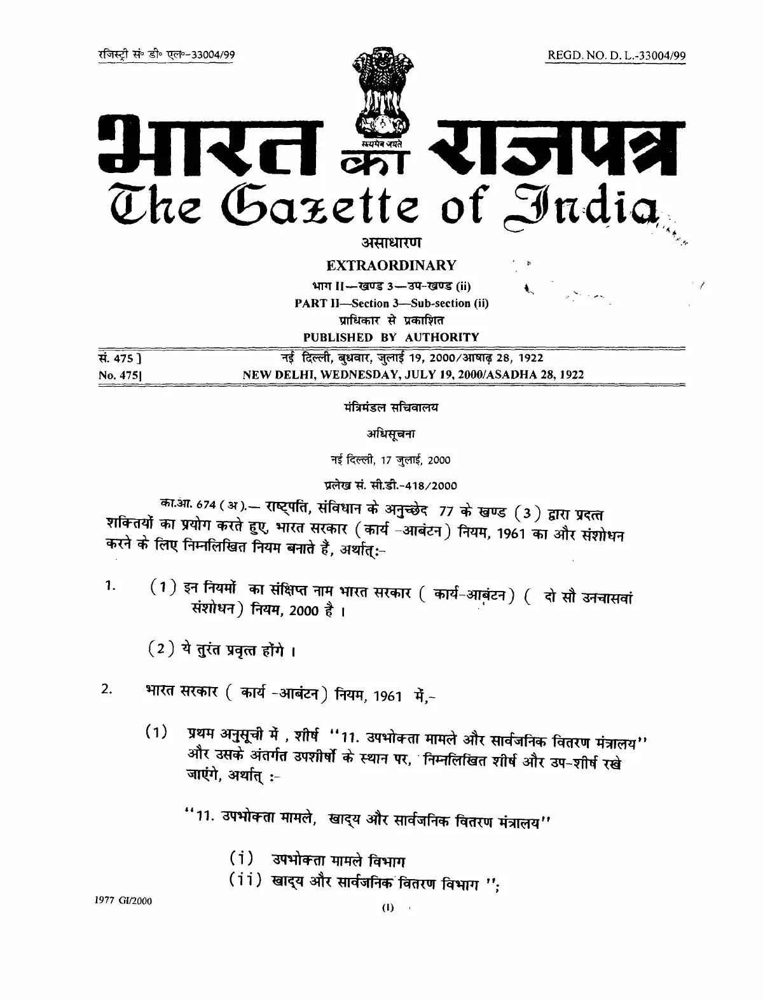
Page 2 of 11
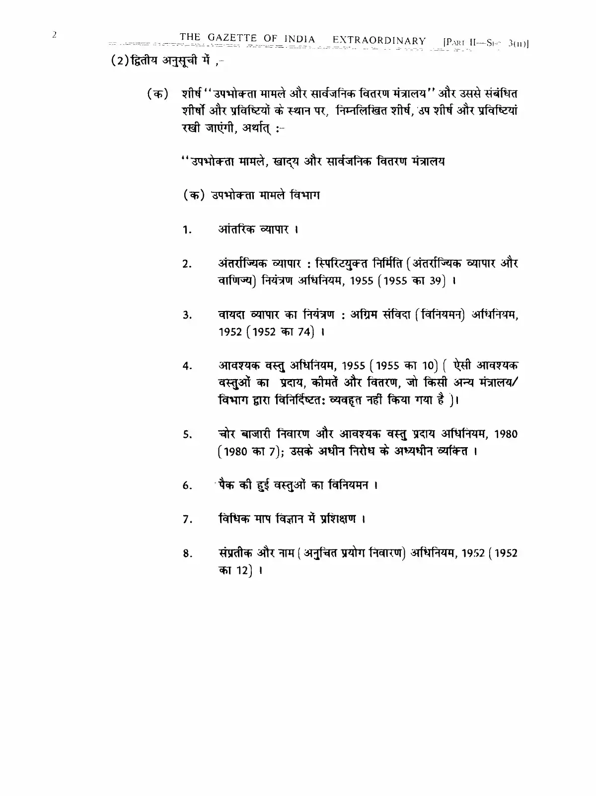
Page 3 of 11
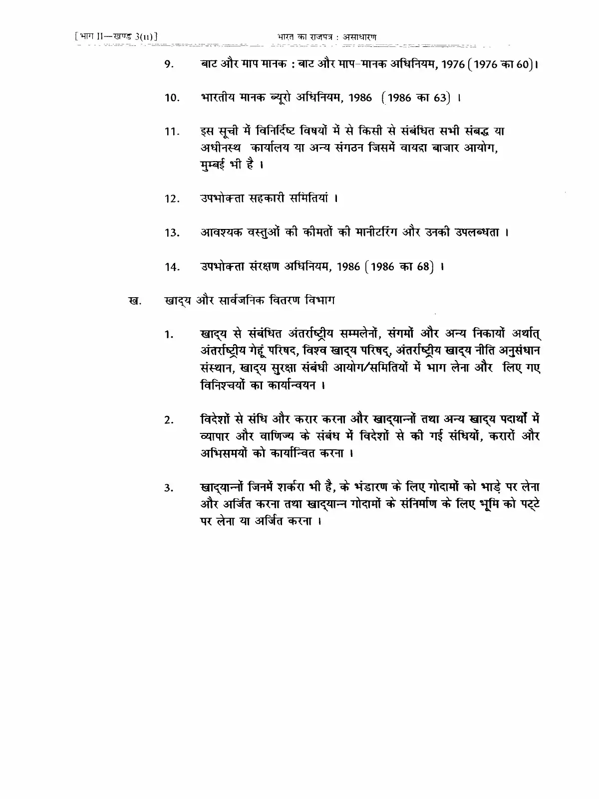
Page 4 of 11
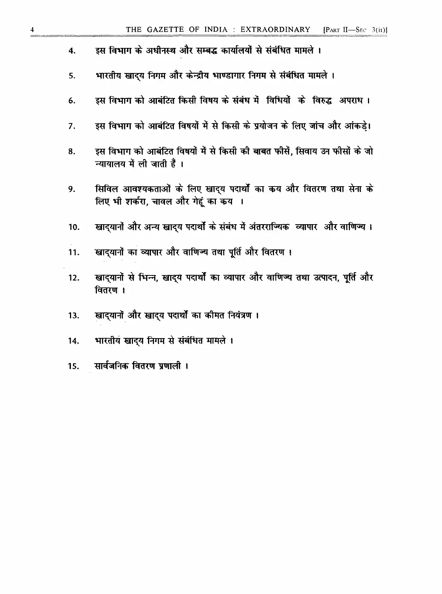
Page 5 of 11
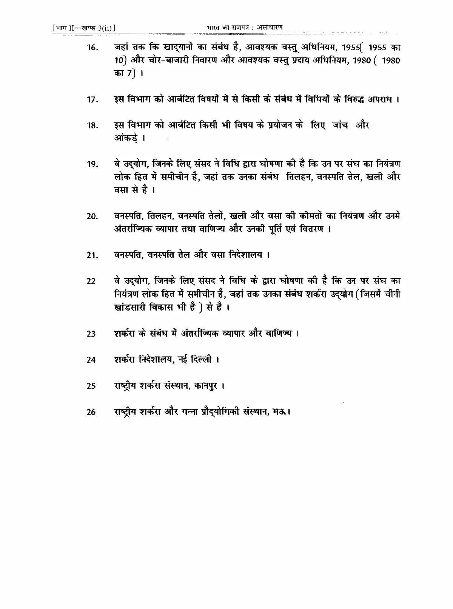
Page 6 of 11
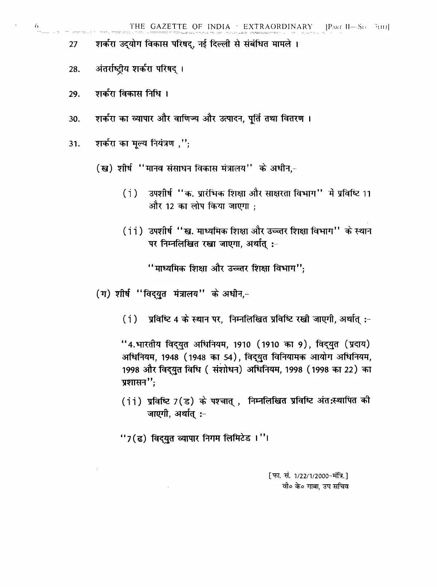
Page 7 of 11
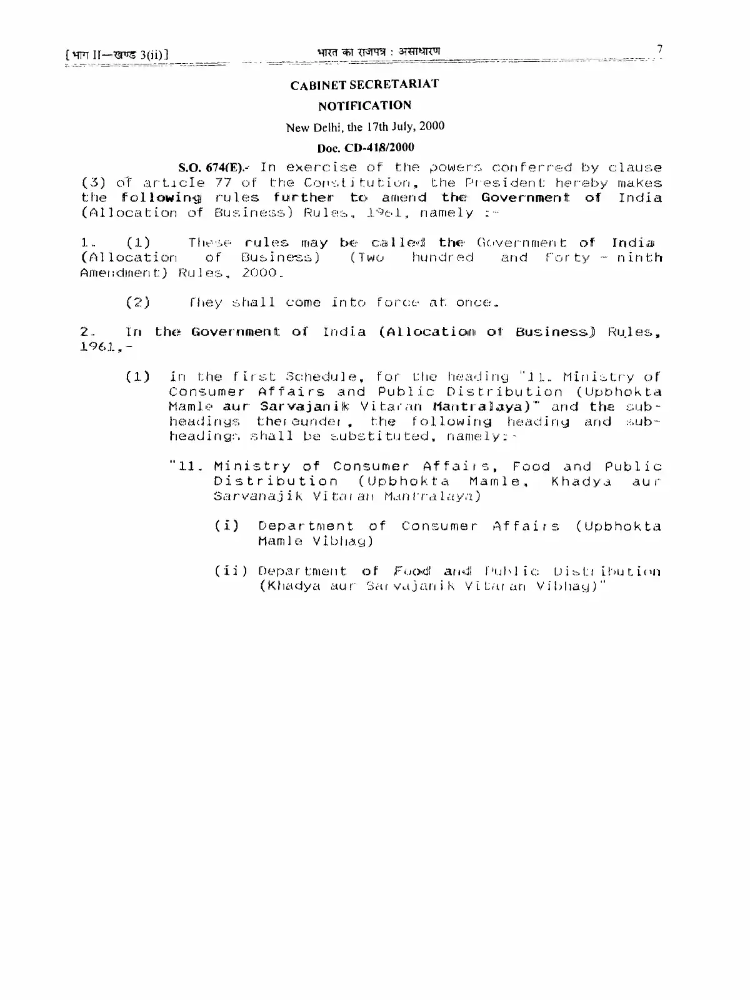
1Schedule 1 › Ministry of Consumer Affairs and Public Distribution
- 11. Ministry of Consumer Affairs, Food and Public Distribution
- i. Department of Consumer Affairs
- ii. Department of Food and Public Distribution Foodd
applied at schedule 1 › ministry 11 in the Rules after #249
Page 8 of 11
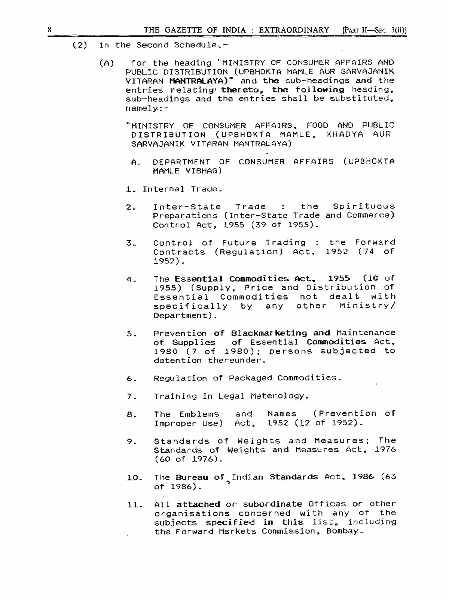
2Schedule 2 › MINISTRY OF CONSUMER AFFAIRS AND PUBLIC DISTRIBUTION
- MINISTRY OF CONSUMER AFFAIRS, FOOD AND AND PUBLIC DISTRIBUTION
- A. DEPARTMENT OF CONSUMER AFFAIRS
- 1. Internal Trade.
- 2. Inter-State Trade : the Spirituous Preparations (Inter-State Trade and Commerce) Control Act, 1955 (39 of 1955).
- 3. Control of Future Trading : the Forward Contracts (Regulation) Act, 1952 (74 of 1952). A- The Essential Commodities Act, 1955 (10 of 1955) (Supply, Price and Distribution of Essential Commodities not dealt with specifically by any other Ministryi Department).
- 5. Prevention of Blackmarketing and Maintenance of Supplies of Essential Commodities Act 1980 (7 of 1980); persons subjected to 1980) detention thereunder.
and 41 more
- 6. Regulation of Packaged Commodities. 1
- 7. Training in Legal Meterology.
- 8. The Emblems and Names (Prevention of Improper Use) Act, 1952 (12 of 1952).
- 9. Standards of Weights and Measures; The of Weights and Standards of Weights and Measures Act, 1976 (60 of 1976).
- 10. The Bureau of Indian Standards Act, 1986 (63) १ of 1986).
- 11. All attached or subordinate Offices or other organisations concerned with any of the subjects specified in this list, including the Forward Markets Commission, Bombay. ()
- 12. Consumer Cooperatives.
- 13. Monitoring of prices and availability of essential commodities.
- 14. The Consumer Protection Act, 1986 (69 of 1986).
- B. DEPARTMENT OF FOOD AND PUBLIC DISTRIBUTION
- 1. Participation in international conferences, Associations and other bodies concerning food, i.e. International Wheat Council, World. Food Council, International Food Policy Research Institute Commission/ Committees on Food Security and implementation of decisions made thereat.
- 2. Entering into treaties and agreements with foreign countries and implementing treaties, agreements conventions with foreign countries relating to trade and commerce in foodgrains and other foodstuffs.
- 3. Hiring and acquisition of godowns for storage of foodgrains including sugar taking on lease or acquiring land for construction of foodgrains godowns.
- A. Matters relating to subordinate and attached offices under this Department.
- 5. Matters relating to the Food Corporation of India and the Central Central Warehousing Corporation. 1977912/2000-2
- 6. Offences against laws with respect to any of the subjects allotted to this Department.
- 7. Enquiries and statistics for the purpose of any of the subjects allotted to this Department.
- 8. Fees in respect of any of the subjects allotted to this Department except fees taken in a court.
- 9. Purchase of foodstuffs for civil requirements and their disposal and also for military requirements of sugar, rice and wheat.
- 10. Inter-State trade and commerce in respect of foodgrains and other foodstuffs.
- 11. Trade and commerce in, and supply and distribution of Foodgrains.
- 12. Trade and commerce in, and the production, supply and distribution of foodstuffs other than foodgrains.
- 13. Price control of foodgrains and foodstuffs.
- 14. Matters relating to the Food Corporation of India.
- 15. Public Distribution System.
- 16. Essential Commodities Act, 1955 (10 of 1955) and the Prevention of Black Marketing and Maintenance of Supplies of Essential Commodities Act, 1980 (7 of 1980), in so far as foodgrains are concerned.
- 17. Offences against laws with respect to any of the subjects allotted to this Department.
- 18. Enquiries and Statistics for the purpose of any subject allotted to this Department.
- 19. Industries, the control of which by by the Union is declared by Parliament by law to be expedient in public interest. as far as these relate to Vanaspati Oilseeds, Vegetable Oils, Cakes and Fats.
- 20. Price Control of and inter-state trade and commerce in and supply and distribution of Vanaspati, Oilseeds Vegetable Oils, Cakes and Fats.
- 21. Directorate of Vanaspati, Vegetable Oils and Fats.
- 22. Industries, the control of which by the Union is by the declared by Parliament by law to be expedient in be public interest, as far 35 these relates to Sugar Industry (including development of Sugar Khandsari)
- 23. Inter-state Trade and Commerce in respect or Sugar.
- 24. Directorate of Sugar, New Delhi.
- 25. National Sugar Institute, Kanpur.
- 26. National Institute of Sugar and Sugarcane Technology Mau.
- 27. Matters relating to the Development Council of Sugar Industry, New Delhi.
- 28. International Sugar Council.
- 29. Sugar Development Fund.
- 30. Trade and Commerce in, and the production, supply and distribution of sugar.
- 31. Price Control of Sugar.
applied at schedule 2 › ministry MINISTRY OF CONSUMER AFFAIRS AND PUBLIC DISTRIBUTION in the Rules after #249
read page break
Page 9 of 11
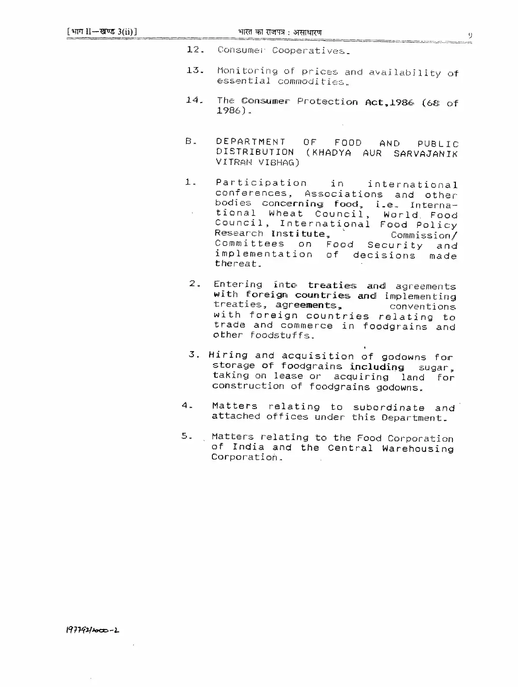
Page 10 of 11
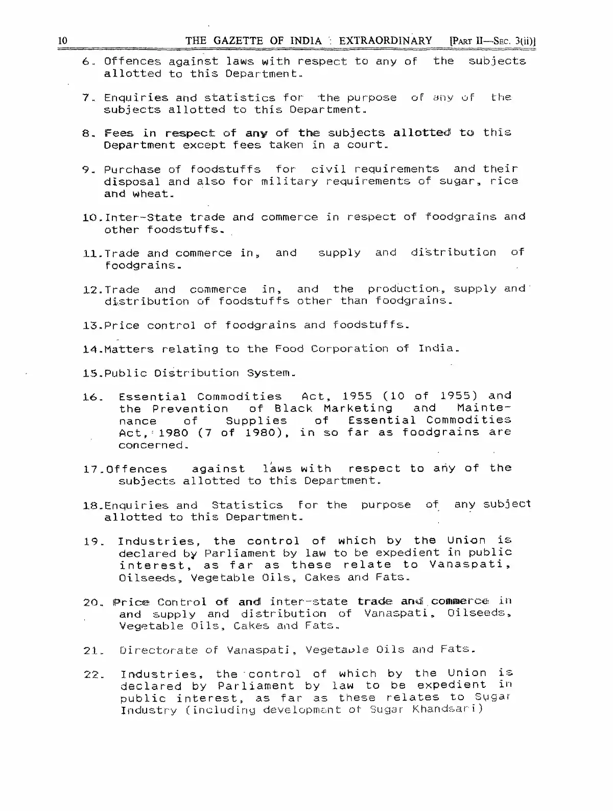
Page 11 of 11
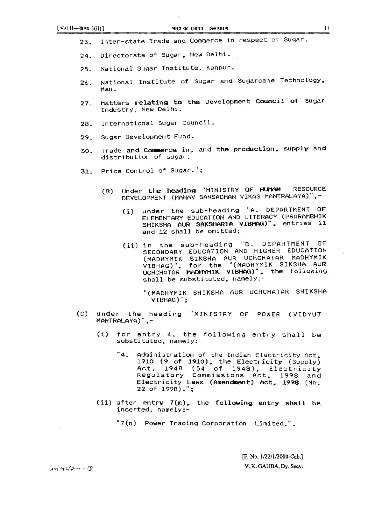
3456Schedule 2 › MINISTRY OF HUMAN RESOURCE DEVELOPMENT › DEPARTMENT OF ELEMENTARY EDUCATION AND LITERACY › entry 11; Schedule 2 › MINISTRY OF HUMAN RESOURCE DEVELOPMENT › DEPARTMENT OF ELEMENTARY EDUCATION AND LITERACY › entry 12
applied at schedule 2 › ministry MINISTRY OF HUMAN RESOURCE DEVELOP- MENT › department A › entry 11 in the Rules after #249
Schedule 2 › MINISTRY OF HUMAN RESOURCE DEVELOPMENT › DEPARTMENT OF SECONDARY EDUCATION AND HIGHER EDUCATION
for “(MADHYMIK SIKSHA AUR UCHCHATAR MADHYMIK VIBHAG)” read “(MADHYMIK SHIKSHA AUR UCHCHATAR SHIKSHA VIBHAG)”
- (MADHYMIK SHIKSHA AUR UCHCHATAR SHIKSHA VIBHAG)
not applied (the change could not be placed in the Rules as read; see How this document was read)
Schedule 2 › MINISTRY OF POWER › entry 4
- A- Administration of the Indian Electricity Act 1910 (9 of 1910), the Electricity (Supply) Act, 1948 (54 of 1948), Electricity Regulatory Commissions Act, 1998 and Electricity Laws (Amendment) Act, 1998 (No. 22 of 1998).
applied at schedule 2 › ministry MINISTRY OF POWER › entry 4 in the Rules after #249
after Schedule 2 › MINISTRY OF POWER › entry 7 › item m
- 7.
- n. Power Trading Corporation Limited.
applied at schedule 2 › ministry MINISTRY OF POWER › entry 7 › item m in the Rules after #249
How this document was read
Known issues
| Change | Issue | Known as |
|---|---|---|
| 4 | change 4: the words to substitute are not in schedule 2 › ministry MINISTRY OF HUMAN RESOURCE DEVELOP- MENT › department B | Words that differ |
From the Government of India (Allocation of Business) Rules, 1961 and their amendments, as published by the Cabinet Secretariat (cabsec.gov.in), read by orgpedia. The readings of the older scanned gazettes have known gaps.